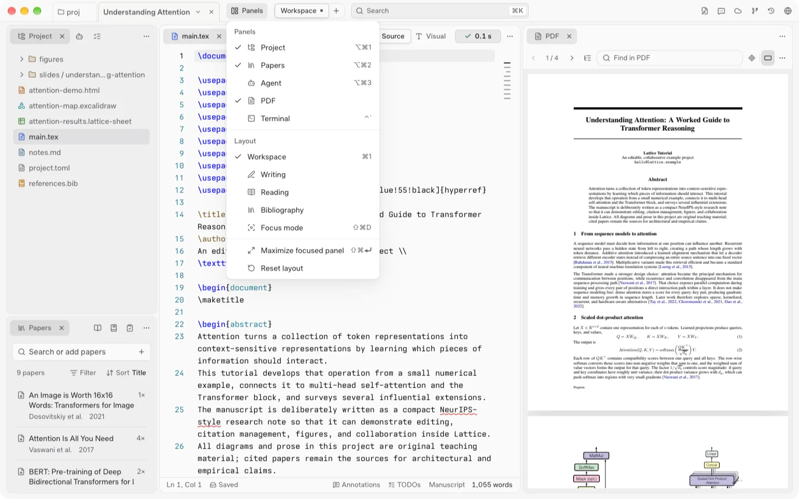

Panels and workspaces
Panels
Everything in the window is a panel: Project, Papers, Agent, PDF and Terminal, and tools such as History, Annotations, Overleaf, TODOs and the Submission checklist. The Panels menu in the title bar shows or hides the first five; the tools open from their title-bar buttons (History, Annotations, Overleaf, Git) or from the command palette (⌘K), for example Manuscript TODOs and Submission checklist. Settings › Appearance › Title bar tools chooses which tool buttons the title bar shows.

- Drag a panel's tab to dock it anywhere: beside, above or below another panel, or as a tab in its group.
⌘⌥1Project,⌘⌥2Papers,⌘⌥3Agent,⌃`Terminal show or hide those panels.⌘⇧↩(Maximize focused panel) maximizes the focused panel and restores the layout again.- Focus mode (
⌘⇧D) hides everything but the editor. - Reset layout in the Panels menu brings back any panel you closed.
Under Layout, the Panels menu lists your workspaces and three ready-made layouts: Writing, Reading and Bibliography.
Workspaces
A workspace is a saved arrangement of panels. They sit as tabs in the title bar, and ⌘1 to ⌘9 switch between them.
- Create: click + next to the workspace tabs. The new workspace starts from the layout on screen; type its name and press Return.
- Save changes: when you rearrange panels, the workspace tab shows a dot. Right-click the tab and choose Save to workspace, or Revert to saved.
- Rename: double-click the tab, or press F2.
- Duplicate: makes a copy and lets you name it.
- Reorder: drag the tab, or use Move left and Move right.
Delete a workspace
Right-click the workspace's tab and choose Delete workspace. If right-clicking doesn't open the menu (some trackpad settings), select the tab and press ⇧F10. The notice that appears (Deleted "Name") has Undo, which brings the workspace back. Delete workspace is unavailable while it is the only workspace.

When the window is too narrow for tabs, the workspaces fold into one menu with the same actions.